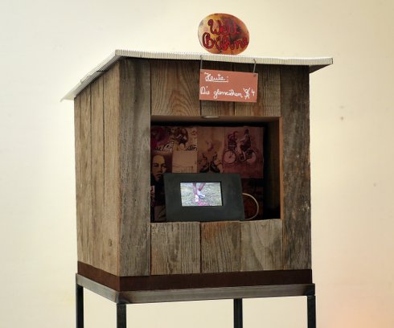

Roman Wörndl
Roman Wörndl geb. 1957 in Prien am Chiemsee. Sportstudium, danach Studium der Architektur an der FH Rosenheim. Seit 1986 arbeitet Wörndl als freier Bildhauer.
Ausstellungen Haus der Kunst 1990, 2010 | Kulturverein Berg 1995 | Galerie Krone, Zürich/ Adliswill 1996 | camera artis, München 2007 | Art Karlsruhe, Galerie Hoeppner 2009 | Kunst im Bau, München 2017 | Wasserspiele Wunsiedel 2018 | Galerie Handwerk, München 2019
Hinter dem Vorhang
2017 | Installation, Video, Sound
Drehbühne, Elektromotor, I-Pod
35x35x40 cm | 4 HD Videos à 2 min
Komposition Episoden 2+4: Therese Strasser | Gesang Episode 4: Evrim
Gündüz.
Auf den wechselnden Bühnen des Welttheaters werden vier Episoden aus dem Privatleben bekannter Politiker gezeigt.